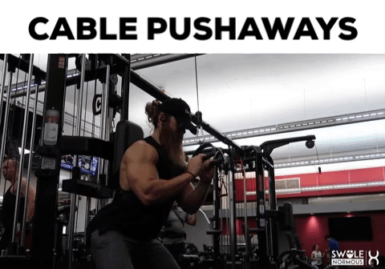

To begin, stand up with a dumbbell held by both hands. Your feet should be about shoulder width apart from each other. Slowly use both hands to grab the dumbbell and lift it over your head until both arms are fully extended.
The resistance should be resting in the palms of your hands with your thumbs around it. The palm of the hands should be facing up towards the ceiling. This will be your starting position.
Keeping your upper arms close to your head with elbows in and perpendicular to the floor, lower the resistance in a semicircular motion behind your head until your forearms touch your biceps. Tip: The upper arms should remain stationary and only the forearms should move. Breathe in as you perform this step.
Go back to the starting position by using the triceps to raise the dumbbell. Breathe out as you perform this step.
Repeat for the recommended amount of repetitions.